| |
|
ISTRAM®BIM ile BIM
|
Giriş
Arayüz Oluşturma Sınıflar/Nitelikler Özellikler Niteliklerin Kaynağı
Görselleştirme.CSV İçe Aktarımı Niteliklerdeki değişken metinler IFC şeması PSET'leri Noktasal nesnelerin PSET'leri Dosyalar Istram, güzergah projelerinin BIM geometrisini oluşturur. Bu projelerdeki bilgilerden yola çıkarak, program tablolarında tanımlanan hacimler oluşturulur ve yol çizgileri, köprü kenarayakları, şev etekleri, bacalar, sanat yapıları gibi diğer 3B elemanlar ilişkilendirilir. Bu bilgiler çok sayıda formatta kaydedilebilir. Demiryolu eksenleri için, BIM veya Virtual 3D'ye girildiğinde (ikinci durumda, eğer Düşey Güzergah menüsünden girilirse), rayların ve traverslerin geometrisi otomatik olarak oluşturulur. Katı 3B gösterime sahip çizgilerin kullanılmasına gerek yoktur. BIM geometrisinin oluşturulması, enkesitler ve bunlarla ilişkili metraj tablosu (DAR) üzerinden yapılır. Bu, elemanların hacmi gibi diğer niteliklerin hesaplanmasını sağlar. Bu sekmede, eksenlerin ve birleşim geometrilerinin BIM modelleri oluşturulabilir, kaydedilebilir ve görselleştirilebilir. Istram'ın bu seçeneklerine Güzergah Projesi menüsünden erişilir. Bu menüye girmeden önce, başka bir çalışma oturumunda hesaplanmış olsa bile, hesaplanmış bir projenin bulunması gerekir.  BIM menüsü birkaç sekmeden (Oluşturma, Sınıflar, Nitelikler, Görselleştirme, Dosyalar) ve BIM proje yapısını gösteren bir BIM ağacından oluşur: 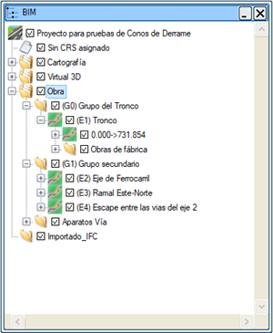BIM Ağacı, sol tarafta yer alır. Projenin elemanlarını gösterir. Başlangıçta sadece eksen gruplarının organizasyonu gösterilir. Sol tarafta. BIM bilgileriyle çalışmaya, kaydetmeye veya 3B görselleştirmeyi yönetmeye olanak tanıyan 5 sekme vardır. Bu sekmeler: Oluşturma, Sınıflar/Nitelikler, Özellikler, Görselleştirme, Dosyalar. BIM 3D penceresi, BIM modelinin 3B gösteriminin yapıldığı bağımsız bir penceredir. Bu pencerenin gösterilebilmesi için oluşturulmuş bir BIM geometrisinin olması gerekir. Ağaçtaki herhangi bir nesne seçildiğinde, bu alanda mevcut olan özellikleri gösterilir. Sınıflar/Nitelikler, BIM elemanları, Istram tarafından atanan bir sınıfa aittir. Bu seçenekte, bu sınıf adı diğer standartlara "çevrilebilir". Özellikler, her bir geometri elemanı için, değerini programın kendi bilgilerinden alacak bir dizi nitelik tanımlanabilir. Görselleştirme, bir ağaç elemanının geometrisi oluşturulduktan sonra bir OpenGL penceresinde görülebilir. Bu alanda ağaç elemanlarının görselleştirme özellikleri tanımlanır. Dosyalar, bir ağaç elemanının geometrisi oluşturulduktan sonra, her birinin olanakları dikkate alınarak çeşitli formatlarda dışa aktarılabilir. Güzergah projesinin BIM menüsünde, aşağıdakileri oluşturmak için araçlarımız vardır:
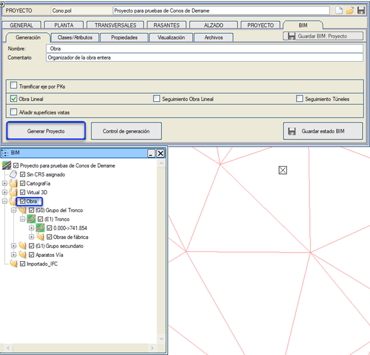
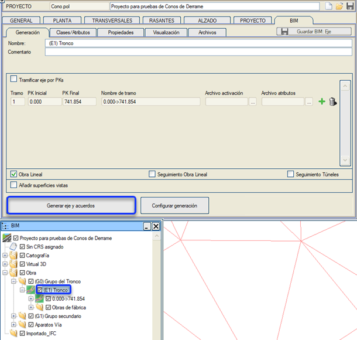
Aynı şekilde her bir ekseni veya birleşim geometrisini ayrı ayrı oluşturma imkanımız da vardır. BIM Ağacı Ağaçta proje bilgilerinin yapısı görülebilir. Ağacın her düğümünde, seçilen düğüme bağlı olarak farklı araçlar içeren bir bağlam menüsü (farenin sağ tuşu kullanılarak) sunulur. 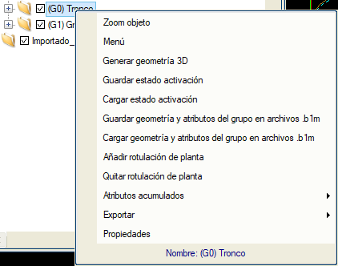
Her bir eksen grubu düğümünden, o gruba ait her bir eksen için bir eleman sarkar.  Her bir eksenden, geometri elemanlarını içeren düğümler sarkar: her eksenin kesimleri ve ondan çıkan birleşim geometrileri. Ayrıca yol çizgilerinin, şev eteği konilerinin, kenarayakların ve bacaların geometri elemanları da eklenir. KarayollarıDüşey Güzergah menüsünün "Kenar Dikmeleri ve Km" tablosunda bulunan kenar dikmeleri ve kilometre taşları, içinde bulundukları kesim (eksen, grup veya proje) oluşturulduğunda otomatik olarak BIM ağacına aktarılır.
Demiryolu eksenleri durumunda, Güzergah Projesi'nin HAT ve TRAVERS menüsünde verilen spesifikasyonlara göre her bir hattın rayları ve traversleri de oluşturulur. BIM ağacının düzenleyici elemanları içinde ESCAPE (Siding Hattı) tipi bir düğüm bulunur: bir siding hattı ekseninin tek hattı ve bir siding hattı eksenine sahip olan demiryolu makas donanımları gruplandırılır. 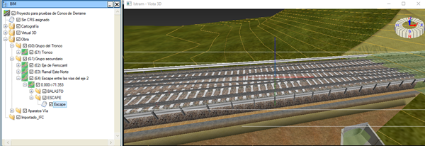 BIM projesi IFC formatına aktarılırken, eğer traversler detaylı bir geometriye sahipse (.TVS Tanımla), bu geometri ile aktarılacaktır. Aksi takdirde, basit bir geometri (kutular) ile aktarılacaktır. 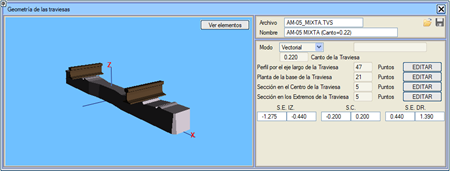 Ağaçtan, OpenGL'de görselleştirilmek veya dışa aktarımda dikkate alınmak üzere elemanlar ve tüm dallar seçilebilir veya seçimden kaldırılabilir. Ray Genleşme CihazlarıBu cihazların rayları ve traversleri, raylar ve traversler için .lil çizim modları ile ve ayrıca BIM ağacında temsil edilir. Bunun doğru bir şekilde yapılması için aşağıdaki adımların izlenmesi gerektiğini unutmayın:
Bu bilgiyi .vol dosyasına kaydedin. Artık proje hesaplanabilir ve BIM oluşturulabilir. Bu cihazlar ağaçta Demiryolu Makas Donanımları klasöründe görünecektir. Estructura_Doble.isa örneğinde, 2. eksenin sağ hattına bir genleşme cihazı eklenmiştir. 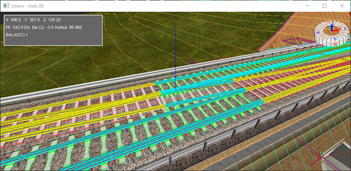 Her eksenin uzunluklarına göre kesilmiş boruları bir alt klasörde oluşturulur. Ayrıca, her bir bacanın özellikleriyle birlikte ayrı ayrı sarktığı Bacalar adında bir düğüm de oluşturulur.
Güzergah Elemanları (Aliymanlar) Güzergah Elemanları düğümü, her bir ekseni oluşturan yatay (doğrular, kurplar ve klotoidler ile) ve düşey (sabit eğimli kesimler ve düşey kurplar ile) elemanları içerir. Tüm bu elemanlar ilgili parametreleri (uzunluklar, azimutlar, kurp yarıçapları, klotoid parametresi, düşey güzergah kesimlerinin eğimi, düşey kurp parametresi vb.) içerir, 3B görünümde görselleştirilebilir ve IFC formatına aktarılabilir. 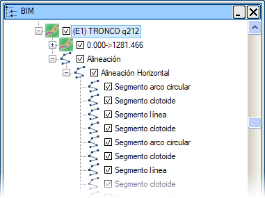
Oluşturma Bu sekmeden, Proje Oluştur kutucuğu aracılığıyla BIM projesini oluşturabiliriz. 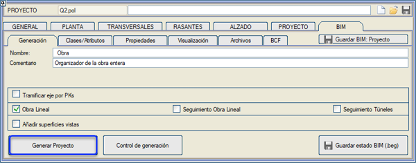 Oluşturma Kontrolü: Belirli BIM ağacı elemanlarının oluşturulmasını etkinleştirmeye veya devre dışı bırakmaya olanak tanır. Çeşitli bölümlere ayrılmıştır: 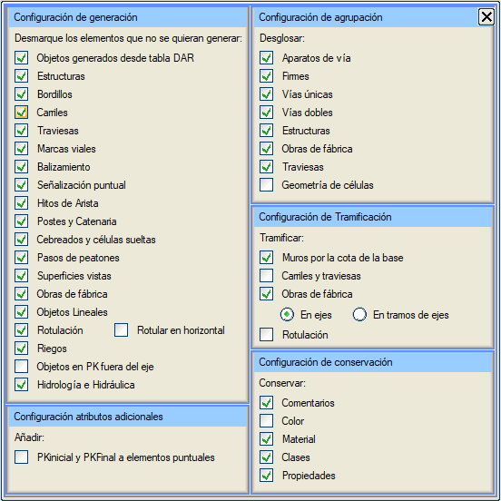
Ayrıca, şunları belirtmeye olanak tanır:
Geometri ve Nitelikleri Kaydet: BIM elemanlarının önceden oluşturulmuş geometrisini, Nitelikler sekmesinde atanmış olası niteliklerle birlikte .b1m dosyalarına kaydeder. BIM Durumunu Kaydet: BIM menüsünün yapılandırmasını içeren .beg uzantılı bir dosya kaydeder. Birden fazla durum kaydedilebilir ve daha sonra Proje sekmesinde yüklenebilir. Güzergah Projesi Takibi ve Tünel Takibi: Bir projenin BIM bilgileri oluşturulurken, proje eksenleriyle ilişkili Güzergah Projesi veya Tünel takip dosyalarının kullanılması seçilebilir. Takip dosyalarıyla ilişkilendirilmemiş eksenler oluşturulmayacaktır. Proje, eksen grubu, eksen, kesimlerin teorik geometriyi (Güzergah Projesi kutucuğu) ve takip geometrisini (Güzergah Projesi Takibi ve Tünel Takibi kutucukları) BIM ağacında aynı anda temsil edecek şekilde oluşturulmasına izin verilir. 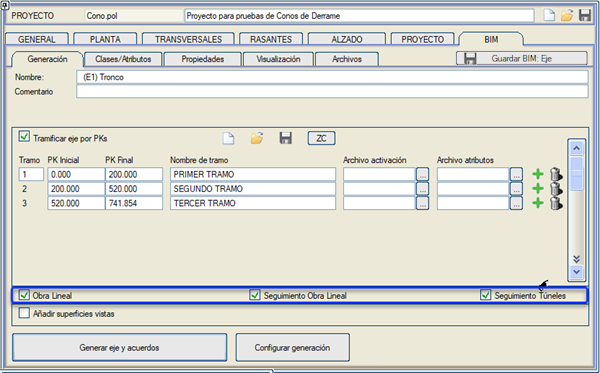 Bir BIM elemanının, ilgili alanda gösterilen bir dizi özelliği vardır. Her zaman bir ad ve bir yorum içerir; proje, eksen grupları, eksenler, kesimler, birleşim geometrileri ve diğer düzenleyici düğümler gibi ağacın yaprak olmayan elemanları yalnızca bu özelliklere sahiptir; geometri (ağacın yaprakları) ise doğasına bağlı olarak renk, uzunluk, başlangıç ve bitiş kilometresi, hacim gibi başka özelliklere sahip olabilir... Bazı özellikler kullanıcı tarafından değiştirilebilir, diğerleri ise projeden otomatik olarak hesaplanır.
Kilometreye Göre Kesimlere Ayır: her bir ekseni kilometreye göre kesimlere ayırır. Bu kesimlere ayırma, eleman tiplerine göre kesimlere ayırma ile uyumludur. ZC kutucuğundan başlayarak, kullanıcının Hesaplama Alanları kesimlerinde sahip olduğu kesimlere eklenir. Eksenleri eleman tiplerine göre kesimlere ayır: BIM modeli oluşturulurken, her eleman güzergah boyunca onu oluşturan parçalar kadar parçaya ayrılır.
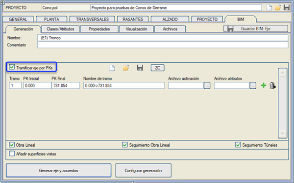
Proje, Grup, Eksen, Kesim ve Birleşim Geometrisi elemanlarının özelliklerinde, elemanı ve ona bağlı olan tüm elemanları oluşturmak için bir düğme belirir. Kök eleman durumunda, tüm proje oluşturulur; bu, araziyi ve sanat yapılarını da içerir. Ayrıca, oluşturulan geometriyi OpenGL penceresinde gösterir. Geometri elemanları, tiplerine göre etkinleştirilebilir veya devre dışı bırakılabilir. Bu elemanların özelliklerinde kendi tipleri görünür. Düzenleyici elemanlarda ise, bu düzenleyicilere bağlı tüm elemanların tipleri görünür. Bulonların OluşturulmasıProje düğümünden ve bu düğüme sağ tıklayarak, bu bulonların uç noktalarını içeren dosyalardan BIM nesneleri olarak Bulonlar oluşturulabilir. 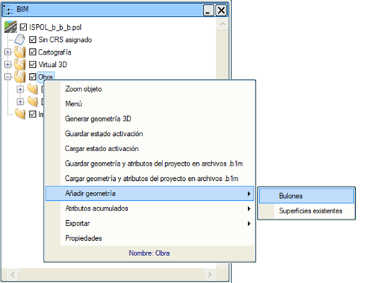 Bu nesneler, bulonların ilişkilendirildiği eksenin klasörüne bağlı olan Bulonlar adlı bir klasörde oluşturulur. Örnek bir .csv dosyası aşağıdaki gibi olabilir: 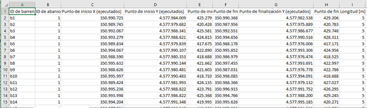 Çap, renk ve eksen parametrelendirilebilir. 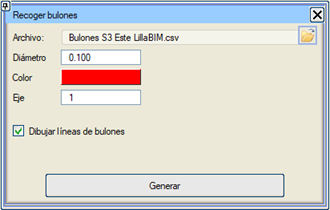 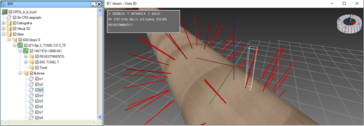
Bir eksenin elemanlarına, üçgenleme (TTP) ve bu üçgenlemeler içindeki alanları sınırlayan kapalı çizgilerden elde edilen yüzeysel nesneler eklenebilir. 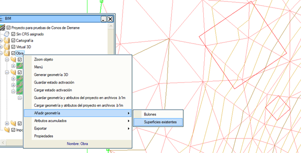
Kalınlıklı Elemanlar BIM ağacının Harita adlı düğümünden, bağlam menüsü (düğüme sağ tıklayarak) aracılığıyla, haritanın çizgilerinden veya TTP'lerden 3B nesneler oluşturmaya olanak tanıyan bir seçeneğimiz vardır. Oluşturulan her nesne veya nesne grubu için bir kalınlık belirtilebilir. Bu nesneler, kullanıcı tanımlı BIM nitelikleri alabilir. Başka bir yöntem, kalınlıklı elemanları dosyadan oluşturmaktır. Bunun için aşağıdaki bilgileri içeren bir .txt dosyası seçilir: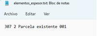 çizgi tipi, metre cinsinden kalınlık ve alfanümerik ve boşluklu olabilen ad; bu üç sütun bir boşlukla ayrılmıştır. Bu durumda, kalınlıklı elemanlar, .txt dosyasının üçüncü sütunundan okuduğu bu adı alır.
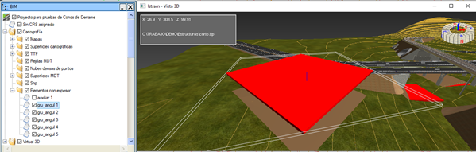
Kalınlıklı elemanları, Kalınlıklı Elemanlar düğümünde bu elemanları sağ tıklayarak seçerek veya doğrudan seçip klavyede Delete tuşuna basarak silmek mümkündür. 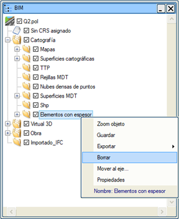 Kalınlıklı Elemanlar düğümüne veya bu elemanlardan birine sağ tıkladığımızda, seçilen nesneyi eksenlerden birine taşımak için Eksene Taşı... aracını da kullanabiliriz. .shp Dosyalarının İçe Aktarımı Bir shp dosyasını açmak için, proje ağacının Harita düğümü içinde bulunan Shp düğümüne sağ tıklanır. Shp dosyasının bilgileri o an aktif olan ttp dosyası üzerine yansıtılacaktır. 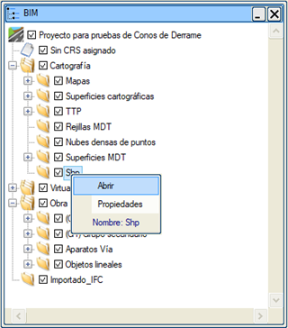
Shape formatındaki dosya yüklenirken, Yükseklikler için farklı modların kullanılabileceği bir menü açılır:
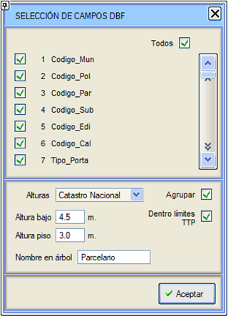
Ağaçtaki Ad kutucuğuna atanan ad, shp dosyasında bulunan farklı geometrik elemanlar için kullanılır. TTP Sınırları İçinde kutucuğu etkinleştirilerek, önceden yüklenmiş TTP dosyasının sınırları dışında bulunan SHP dosyasının elemanları da içe aktarılabilir. Sınıflar/Nitelikler Sınıflar penceresi iki bölüme ayrılmıştır: NİTELİKLER ve SINIFLANDIRMA. Bir bölümden diğerine geçmek için aynı adlı düğmeleri kullanırız. 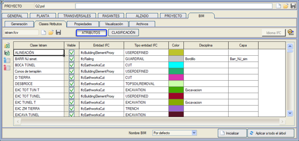
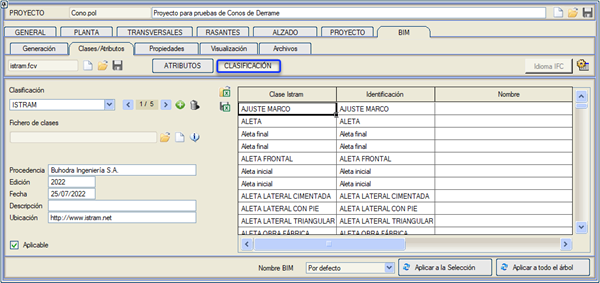
Bu tablolarda her bir alan manuel olarak düzenlenebilir, ayrıca Excel sembollü düğmeler aracılığıyla içerikleri CSV formatında kaydedilebilir/yüklenebilir. Sınıflar/Nitelikler penceresindeki Istram sınıflarını, sadece mevcut projede gerçekten kullanılanları gösterecek şekilde filtrelemek mümkündür: 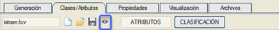
NİTELİKLER: Bu tür bir CSV dosyası açıldığında, CSV dosyasında bulunan sütunlar ile Istram sütunları arasında ilişki kurabileceğimiz bir pencere gösterilir: 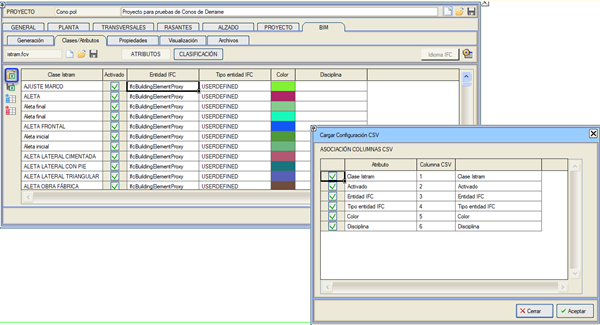
İçe aktarmak istemediğimiz sütunlar için ilgili bayrağı devre dışı bırakırız (Istram sınıfı her zaman CSV dosyasında bulunmalı ve her zaman içe aktarılmalıdır, bu yüzden devre dışı bırakılamaz). CSV sütunu numarası, CSV dosyasındaki sütunun nitelik tablomuzda alacağı konumu gösterir. Niteliklerin içe aktarımı, o anda IFC ağacında seçili olan düğümden yapılacaktır.
Bir niteliğin sütun başlığına sağ tıklayarak, artan veya azalan sırada alfabetik olarak sıralayabiliriz: 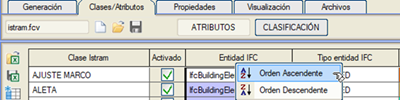
Eğer kullanıcı tarafından eklenmiş bir nitelikse, sütun adını değiştirme imkanı da sunar: 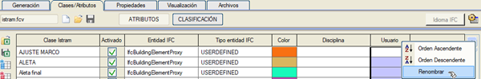
Tabloda sağ tıkladığımızda, seçilen sütuna bağlı olarak farklı işlevler elde ederiz. Istram sınıfının adına tıklarsak, bu kaydı silebiliriz: 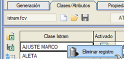
IFC Varlığı üzerine tıklarsak, bir listeden seçim yapma imkanı sunar: 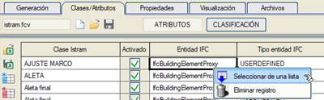
Bu durumda, IFC Varlığını veya IFC varlık tipini bir listeden seçme imkanı sunulur:
IFC varlık tipi "UNDERFINED" olan BIM ağacı elemanlarının Nesne Tipi (ObjectType) niteliğini değiştirmek mümkündür. Bu değişiklik IFC Varlık Seçimi penceresinde yapılacaktır. 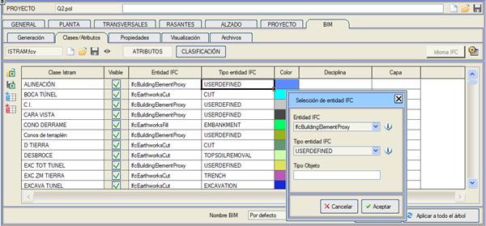 BIM dosyalarının yapılandırma seçeneği aracılığıyla, hem dil için hem de Istram sınıflarının IFC varlıklarına varsayılan olarak atanması için kullanmak istediğimiz dosyaları belirtebiliriz: 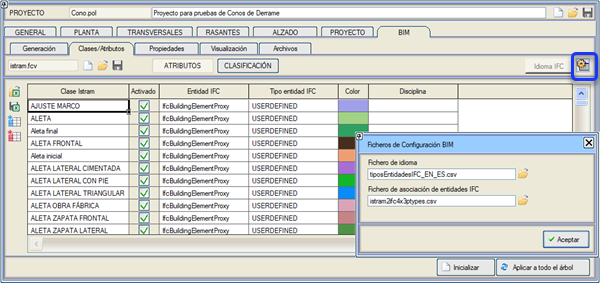
Dil dosyası, 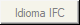 düğmesinin basılı olup olmamasına göre, her bir IFC varlığının ve tiplerinin neyi temsil ettiğine dair bir açıklamayı ilgili dilde göstermek için kullanılır:
Renk kutucuğuna çift tıklayarak renk tablosundan seçim yapabiliriz: 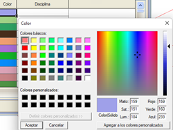
Uniformat formatında, aşağıdaki yapıya sahip bir sınıf dosyası yükleyebiliriz:    İstenen elemanı seçer ve bu seçimin atanması için Kabul et düğmesine basarız. BIM nesnelerinin adları olarak bir BIM sınıflandırmasının adlarını kullanmaya izin verilir. Bu seçenek, SINIFLANDIRMA bölümünde, o menünün alt kısmında, adlarını kullanmak istediğimiz sınıfı seçeceğimiz bir açılır liste aracılığıyla bulunur. 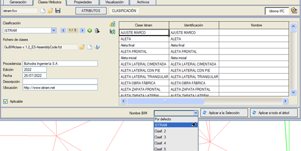
NİTELİKLER bölümünden, her bir ISTRAM nesnesinin dışa aktarılacağı IFC varlığını veya IFC varlık tipini seçmek mümkündür. Varsayılan olarak IfcBuildingElementProxy olarak dışa aktarılırlar. Bir listeden mevcut varlıklar arasından IFC varlığı seçilebilir:
Bir "IFC Varlık Tipi" ile ilişkilendirilen BIM nesneleri, IFC standardının önceden tanımlanmış varlık tiplerine karşılık gelir. Değeri, ağaçta seçilen BIM nesnesinin Özellikler penceresinde değiştirilebilir.  Sınıflandırmaya ilişkin nitelikler Sınıflandırmaya ilişkin nitelikler şunlardır: konum, sürüm, tarih, açıklama ve kaynak; bunlar IFC formatına dışa aktarım için düzenlenebilir:
Bu Özellikler sekmesinde, Istram'ın BIM modeline özellik uygulama şablonlarını oluşturmak için, sırayla bir dizi nitelikle ilişkilendirilmiş bir veya daha fazla PSET (Özellik Seti) eklenebilir. 
PSET Kontrolü: Sona PSET ekle
seçeneği, bir PSET içindeki bir özellik grubunu tekrarlayarak kapsamı değiştirmeye olanak tanır. Tekrarlanan özellikleri başka bir Özellik Setine atamak da mümkündür: Kopyalanmak istenen özellikler seçilir ve Kopyala'ya basılır: Ardından, Kopyala... penceresinde sınıf (veya menü moduna göre düzenleyici düğüm) ve bu yeni nitelikleri alacak PSET'ler seçilir. Kopyala düğmesi, önceden seçilen nitelikleri bu seçicide seçilen sınıflara ve PSET'lere uygular. Menü, farklı sınıf ve PSET seçimleriyle yeni kopyalamalar için aktif kalır. İşlemi bitirmek için Kapat seçilir: Bazen, bir nitelik grubunu kopyalarken veya bir özelliğin sınıfını değiştirirken, değerin seçilen sınıf için mevcut olmaması durumu ortaya çıkabilir. Bu durumda menü, bir ünlem işaretiyle sorunu gösterir; geçerli olmayan özellikler uygulanmaz.
Bir PSET içindeki özelliklerin kontrolü: PSET Adı: seçilen PSET'i adlandırmak için ayrılmış alan (varsayılan PSET n). Geometri: Geometrik nesneleri etkileyen özelliklerin listesi. Düzenleyici düğümler(xx): Düzenleyici düğümleri etkileyen özelliklerin listesi, parantez içinde o listedeki özellik sayısı.
Bu nitelikler, bu menüde bir başlık (nitelikleri gruplayan), niteliğin adı ve alacağı değer (veya zincirlenmiş değerler) belirtilerek oluşturulur. Yeşil artı işaretli düğmeler ve çöp kutusu şeklindeki düğmeler, nitelik ve değer eklemek veya silmek için kullanılır.
Şablonların kontrolü: Her bir nitelik uygulama şablonu, herhangi bir zamanda geri yüklenmek üzere bir .atf dosyasına kaydedilebilir. Aşağıda bu menünün ikonları açıklanmaktadır: Özellik şablonunu sıfırla
Istram'ın BIM modeline özellik verilerini içe aktar (.csv dosyası) Bir IFC dosyasından özellik verilerini içe aktar (Istram'daki nesnelerin aynı tanımlayıcılara sahip olması gerekir)
Şablonların Uygulanması: Her uygulama şablonu, özellik paketleri olan PSET'lerden oluşur. Bir PSET, tek bir özelliğe veya birden fazla özelliğe sahip olabilir. Tanımlanan nitelikler, oluşturuldukları anda ilgili BIM elemanlarına aktarılır; ancak, BIM elemanları bu nitelikler olmadan oluşturulmuşsa, bu menüden nitelikleri alabilirler. Özellikler sekmesinin sağ alt köşesinde bulunan Uygula düğmesi aracılığıyla aşağıdaki menü açılır: Mevcut PSET'i, tümünü veya her bir PSET adının solundaki bayrakla seçerek uygulanacak olanları seçebiliriz. Ayrıca, o pencerenin sağ tarafında, tüm ağaca mı yoksa sadece BIM ağacında seçilen geometriye mi uygulanacağı seçilir; yani, bu niteliklerin oluşturulduğu veya uygulandığı BIM ağacı düğümünden itibaren. Eğer Değer mevcut olmadığında bu metinle özelliği oluştur ve doldur bayrağı etkinleştirilirse, değeri nesnenin sınıfında mevcut olmayan bir özellik uygulandığında, artık kullanıcının ayrılmış alana belirttiği metinle oluşturulabilir. Nitelikleri Sıfırla, IFC varlık tipine göre varsayılan olarak oluşturulan PSET'ler için modelin tüm niteliklerini ve Sınıflar/Nitelikler sekmesinden eklenen nitelikleri sıfırlar. Özellikler sekmesinde oluşturulan kullanıcı PSET'leri etkilenmez. Modelde uygulanan veya çeşitli IFC'lerin kendi modellerinde içerdiği tüm özellikler, her nesnenin veya düzenleyici düğümün bağlam menüsünde Özellikler seçeneği ile sorgulanabilir: Kavramsal olarak iki tür düğüm vardır: düzenleyici düğümler ve geometri düğümleri. Menüde, onlarla çalışmak için her iki düğüm türü de ayırt edilir. Düzenleyici düğümler yalnızca Genel türünde değerlere sahip olabilir. Geometri düğümleri, Istram veya Genel türünde değerlere sahip olabilir. Kaynaklarına göre iki olası nitelik giriş dalı ayırt ederiz: Genel veya Istram. Her birinde, sırasıyla kullanıcı niteliklerini veya sınıf niteliklerini seçebiliriz. Kullanıcı tarafından özelleştirilmiş Nitelikler oluşturulmasına izin verilir.
BIM varlıkları için, özellik yönetimi menüsünde bulunan "Bileşik değer oluştur" düğmesine basarak bileşik özellikler oluşturmak mümkündür.  Tablo ile Nitelik Atama: Kullanıcı daha sonra bu niteliklerin içereceği verileri, ya bir .CSV veya TCQ'dan gelen bir .FCT dosyasından verilerini yükleyeceği bir tablo aracılığıyla ya da kullanıcının manuel olarak belirleyeceği şekilde seçebilir. Sınıf tipolojisi için ISTRAM değerleri: Metraj tablosunun Kazı ve Dolgu disiplinleri.
Üstyapılar
Orta Ayaklar, Kenar Ayaklar, Kanatlar
Kanatlar:
Niteliklerin değerinin, kullanıcı tarafından belirtilen bir metin olması imkanı. Bu metin, niteliğin uygulandığı tüm elemanlara aktarılır. .CSV İçe Aktarımı .CSV dosyası aracılığıyla, Satır veya Sütun formatında nitelikleri içe aktarma imkanı. Kullanıcı niteliklerini bir *.CSV dosyasından (bir IFC dosyası dışa aktarılırken Istram tarafından oluşturulur) içe aktarma seçeneğimiz vardır. Bu şekilde, bu nitelikleri o dosyada değiştirebilir ve daha sonra Istram'a tekrar içe aktarabiliriz. Dışa aktarma yapılandırma kutucuğunda dışa aktarma yaparken, programın projemin Bim alt klasöründe oluşturduğu .CSV dosyasını nasıl dışa aktaracağımı seçebileceğimi unutmayın. Dışa aktardığımız .CSV dosyası, o dosyaya değer katmak için yapılan olası değişikliklerle birlikte daha sonra programa içe aktarılabilecektir. Niteliklerdeki değişken metinler Hücrelerin tüm değişken metinleri, onlardan oluşturulan BIM nesnelerinin nitelikleri olarak dahil edilir. Her hücre için niteliğin adı ve değeri belirtilebilir. Hücre tipi tanım menüsünden, hücrenin BIM nitelikleri olarak görünecek olan bu değişken metinleri verebilirsiniz. BIM standardında, tüm projelere varsayılan olarak uygulanan bazı PSET'ler bulunmaktadır: Pset_PavementMillingCommon, Pset_TrenchExcavationCommon, Qto_BodyGeometryValidation... Her IFC Varlık tipi (ifcBuildingElementProxy, ifcWall, ifcColumn...) belirli bir standartlaştırılmış PSET ve özellik setine sahiptir. Her bir varlık tipine uygulanacak bu set, kütüphanede bulunabilen DefaultPsets.csv adlı bir dosyada yapılandırılabilir:
Istram, sınıfları ve nitelikleri nesnelere uygularken bu PSET'leri otomatik olarak ekler. IFC dosyası dışa aktarılırken, bu PSET'ler son olarak dışa aktarılan dosyada yansıtılıp yansıtılmayacağı şekilde etkinleştirilebilir veya devre dışı bırakılabilir.
İlişkili IFC modellerine sahip sembollerden oluşturulan Noktasal Nesneler, bu modellerde tanımlanan PSET'leri miras alacaktır.
Eleman oluşturma düğmesine veya "Virtual 3D" düğmesine basıldığında, oluşturulan geometrinin 3B temsilini içeren bir pencere gösterilir.  Aydınlatılmış Model: geometri "aydınlatılmış" veya düz renkle gösterilebilir. Aydınlatılmışsa hacim daha iyi anlaşılır. İki Yüz: üçgenlerin her iki yüzden de boyanacağını belirtir. Geometrilerin içini görmek isteniyorsa kullanışlıdır. Şeffaflık: etkinleştirildiğinde tüm nesneler belirli bir şeffaflık derecesi kazanır, OpenGL penceresinde imlecin üzerine getirildiği nesne biraz daha opak olur ve seçilen nesne opak olur. Tel Kafes Model: üçgenlerin kenarlarını üzerlerine çizmeye olanak tanır, bu şekilde normal bir görselleştirmede fark edilmeyebilecek geometri detayları görülebilir. Harita: OpenGL penceresinde yüklü olan haritanın görselleştirmesini ekler. Dokulu: geometrilerin dokularının boyanacağını belirtir. Kurulum, BIM geometrisinin dokularla görselleştirilmesi için gerekli olan Virtual 3D kütüphanesinin malzemelerini (dokularını) içerir. Nesnelerin genel aktivasyonu: nesnelerin tiplerine göre etkinleştirilmesine veya devre dışı bırakılmasına olanak tanır: kazılar, dolgular, yüzeyler ve diğerleri. Güzergah projelerinde BIM nesnelerinin geometrilerinin doğası gereği, diğer nesnelerin içinde kalan nesneleri görebilmek için kameranın görüşüne dik bir kırpma düzlemi etkinleştirilmesine izin verilir.
  Farenin sol tuşu, nesneleri seçmeye ve görünümü bir noktaya ortalamaya olanak tanır. Üst üste binen nesneler varsa, imlecin altındaki nesnelerden herhangi birinin seçilebileceği bir bağlam menüsü gösterilir. Farenin orta tuşu, görünümü görüntünün merkez noktası etrafında döndürmeye olanak tanır. Farenin sağ tuşu, sahne üzerinde gezinmeye olanak tanır. BIM projesi özellikler sekmesinden oluşturulduğunda, proje sekmemizde BIM adında bir alt klasör oluşturulur. Bu klasörde, BIM bilgileri içeren bir .csv dosyası saklanır. BIM ağacı, projede bulunan farklı IFC varlık tiplerine göre veya mevcut aktif sınıflandırmalara göre elemanları gruplayan Sınıflandırmalara göre sıralanarak görüntülenebilir.Sınıflandırmalara Göre Görselleştirme etkinken, Sınıflandırmalar ağacını IFC formatında dışa aktarmak mümkündür.
Seçim Filtresi seçeneği, BIM ağacı düğümlerini IFC varlık tipine ve ISTRAM adına göre filtrelememize olanak tanır, böylece bu seçimle yeni bir düğüm oluştururuz ve bu düğümü nitelik ataması için kullanabiliriz. Nesnelerin IFC varlık tipine ve sınıflandırmaya göre filtrelenmesine izin verilir.
Dosyalar Oluşturulan bilgiler IFC, 3DO, DGN, DWG/DXF,OBJ, BC3 ve XML formatlarında kaydedilebilir.  IFC formatında, ağaç yapısı ve mevcut düğüme bağlı ağaç elemanlarının tüm özellikleri (renk ve malzeme hariç) tek bir dosyada saklanır. Bu dosyalar, bu formatın dört sürümünde kaydedilebilir: 2x3, 4, 4x1, 4x2 ve 4x3. Güzergah elemanlarını, enkesitleri dışa aktarma ve ağaçta görünen ad yerine nesnenin sınıf adını kullanma imkanı vardır. DWG formatında dışa aktarma: çıktı dosyasında ne tür nesnelerin oluşturulacağı seçilebilir: 1. Ayrı üçgenler ve dörtgenler 2. Üçgen ve dörtgen ağları (mesh) (varsayılan seçenek) 3. 3B Katılar, büyük nesneler için önerilmez. Diğer yandan, .DWG dosyasına dışa aktarırken:
OBJ formatında, mevcut düğüme bağlı ağaç elemanlarının geometrisi, rengi ve malzemesi tek bir dosyada saklanır. BIM elemanları ağacının herhangi bir düğümünde, o düğüme bağlı tüm geometri OBJ formatında dışa aktarılabilir. Bu, bir geometri elemanını, bir ekseni, bir eksen grubunu veya tüm projeyi tek bir dosyada kaydetmeyi sağlar. Diğer formatlarda, her bir geometri elemanı için bir dosya kaydedilir ve dosya adına ait olduğu eksen veya birleşim geometrisi bilgisi dahil edilir. Ekli resimde gösterdiğimiz aşağıdaki IFC formatlarını kaydedebiliriz ve Ifc'yi sıkıştır kutucuğunu etkinleştirirsek, farklı sürümlerinde sıkıştırılmış formatta (IFCZIP) kaydedilebilirler. Harita/TTP düğümüne bağlı tüm TTP'leri tek bir IFC dosyasında dışa aktarmak mümkündür. Bunun için TTP düğümüne sağ tıklayıp ilgili dışa aktarma seçeneğini seçmek yeterlidir. Dosyalar sekmesinin dışa aktarma yapılandırma ikonu aracılığıyla: IFC formatına dışa aktarırken, .IFC dosyasının yanı sıra, onun grafik olmayan bilgilerini içeren bir .CSV dosyası da oluşturulur. Bu grafik olmayan bilgiler, yukarıdaki resimde görüldüğü gibi Satırlar veya Sütunlar halinde elde edilebilir. Bu format, .CSV dosyasında yapılacak olası nitelik değişikliklerini toplamak için Istram'a geri de aktarılabilir. IFC dosya formatı: IFC dosyası için karakter kodlama formatını, ISO-10303-21 standardı ile ISO-8859-1 (Latin alfabesinin kodlamasını tanımlar) arasında seçme seçeneği. Dışa Aktarma EDM: BIM ağacı düğümlerini EDM formatına aktarmak mümkündür. Bunun için, dışa aktarılmak istenen düğüme sağ tıklayıp Dışa Aktar > EDM seçeneğini seçeriz. Dışa aktarımda kullanılacak hem modeli hem de çizgi tipini seçebiliriz. Bu şekilde ekranda ilgili EDM çizgileri oluşturulur ve istenirse dosyaya kaydedilebilir. EDM çizgileri, 3d-yüzeyler dosyaları gibi kapalı üçgenler veya dörtgenlerdir. Böylece onlarla şevli enkesitleri kesmek için harita yüzeyleri tanımlanabilir. Aynı adlı elemanları toplu olarak dışa aktarmak için gruplamaya ve ayrıca elemanları gruplayıcı olarak Katman niteliğini kullanmaya izin verilir. Dışa Aktarma CSV: IFC dosyasını oluşturmaya gerek kalmadan BIM ağacı düğümlerini CSV formatına aktarmak mümkündür. BIM ağacının yapı hacimleri listesine sahibiz. Bu, BIM menüsünün Dosya sekmesi içinde bulunur. Arazinin Dışa Aktarımı BIM ağacından kesilmiş (veya kesilmemiş) araziyi, bilinen IFC, OBJ, DWG/DXF... formatlarının yanı sıra ttg (Topografya) formatında da dışa aktarmak mümkündür. Koordinat Orijini ve IFC İçe Aktarımı
düğmesi, IFC dosyalarının içe aktarımını yapılandırmaya olanak tanır. Belirli varlıkların içe aktarımını etkinleştirmeye/devre dışı bırakmaya izin verir. İçe aktarılan elemanlara sağ tıklayarak, aynı adla birden fazla eleman içe aktarılmışsa, çeşitli elemanları 1'den başlayarak numaralandırmak için İçerilen elemanları numaralandır seçeneğini kullanabiliriz. İçe aktarılan IFC; IFC, OBJ, DWG/DXF, DGN, KMZ, 3DO, EDM, CSV, TTG ve LandXML formatlarına dışa aktarılabilir. Dışa aktarma dosyasını bölme seçenekleri BIM->Dosyalar menüsünden bir BIM geometrisi dışa aktarırken, seçilen tüm dalın bir dosyada, eksen başına bir dosyada veya geometri başına bir dosyada kaydedilmesi belirtilebilir. Yalnızca ağaçta etkin olan elemanlar kaydedilir. Bu seçim, BIM ağacı düğümlerinden yapılan dışa aktarımı da etkiler. Eleman başına bir dosyada dışa aktarma çok zaman alabilir ve çok fazla disk alanı kaplayabilir, dikkatli kullanılması önerilir. |

 ikonu ile yeni bir nitelik sütunu ekleyebilir ve ikonu ile silebiliriz. Önceden tanımlanmış nitelik sütunları silinemez.
ikonu ile yeni bir nitelik sütunu ekleyebilir ve ikonu ile silebiliriz. Önceden tanımlanmış nitelik sütunları silinemez. Seçili PSET'i sil
Seçili PSET'i sil Seçilenden önce PSET ekle
Seçilenden önce PSET ekle Özellik ekle
Özellik ekle Önceden tanımlanmış bir tablodan özellik ekle, nitelikler için seçilebilir değerler dosya alanında kullanılan tablo (*.csv)
Önceden tanımlanmış bir tablodan özellik ekle, nitelikler için seçilebilir değerler dosya alanında kullanılan tablo (*.csv) Özelliği kopyala
Özelliği kopyala Özelliği sil
Özelliği sil .atf özellik şablonunu yükle
.atf özellik şablonunu yükle .atf özellik şablonunu kaydet
.atf özellik şablonunu kaydet